Nel 2012 Mazinga Z compie quarant'anni. In occasione della ricorrenza mi pare giusto e doveroso proporre un dossier sul robot che ha cambiato l'immaginario collettivo dei giapponesi e non solo, dando origine al ricchissimo filone del super robot e successivamente del mecha. Tale è stata l'influenza di Mazinger Z che si potrebbe scrivere un libro su di esso. Questo dossier costituisce un piccolo assaggio, con lo scopo principale di far capire l'importanza storica del padre dei robottoni, ad uso soprattutto delle giovani generazioni. Per motivi di spazio si è deciso di focalizzare l'attenzione soltanto sulla serie televisiva di Mazinger Z dei primi anni settanta,con cenni ai due film cinematografici del '73 e '74. I due manga degli anni settanta, quello originale di Go Nagai e quello derivato di Gosaku Ota verranno colpevolmente ignorati. Non c'è dubbio che andrebbe affrontato anche un discorso sui remake moderni di Mazinga Z, mi riferisco ad anime come Shin Mazinger, Mazinkaiser, Mazinkaiser SKL, e a manga come MazinSaga, Z Mazinger e Shin Mazinger ZERO. Per motivi di spazio però ignoremo tali remake. Per lo stesso motivo mancherà un'analisi del Grande Mazinga (Great Mazinger) e Goldrake (Grandizer), che meriterebbero da soli altri dossier: tuttavia qualche cenno va dato necessariamente, perché Mazinga Z compare come guest star nelle ultime puntate del Grande Mazinga e il suo pilota Koji Kabuto è nel cast di Goldrake. Qui ci interesseremo soltanto del Mazinga originale, non perché gli altri figli di Nagai (Getter, Jeeg e compagnia) siano meno importanti, ma perché Mazinga Z è il figlio maggiore, e gli vanno tributati gli onori del primogenito.
La storia di Mazinga Z è piuttosto nota, ma per motivi di completezza, ad uso di chi non ha avuto modo di vedere il Mazinga classico o i suoi remake, ne darò un breve riassunto.
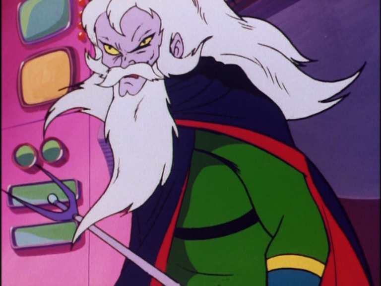
Il malvagio Dottor Inferno (Doctor Hell in originale) scopre sull'isola di Bardos i resti dell'antica civiltà di Mikenes. Il nome è una storpiatura del nome della civiltà micenea che ha dominato il Mediterraneo al tempo della guerra di Troia. Nella finziona nagaiana, i micenei padroneggiavano una tecnologia molto avanzata ed erano in grado di costruire dei giganteschi robot meccanici; l'idea viene dalla celebre statua del Colosso di Rodi, distrutta da un terremoto nel 226 avanti Cristo. Il Dottor Inferno decide di sfruttare la tecnologia di Mikenes per creare un'invincibile armata di mostri meccanici (kikaiju in originale) con cui conquistare il mondo. Il dottor Juzo Kabuto, che fa parte della spedizione archelogica che ha scoperto l'isola di Bardos e conosce i piani di Hell, decide di usare le sue conoscenze scientifiche per costruire un robot in grado di sconfiggere i mostri meccanici: Mazinga Z, rivestito in super lega Z e alimentato dall'energia fotoatomica che si estrae da un minerale detto Japanium. Alla sua morte Juzo lascia in eredità il robot al nipote Koji, che si unirà al Centro di Ricerche sull'Energia Fotoatomica diretto dal professor Yumi, allievo prediletto di Juzo. Yumi ha costruito anch'egli un robot alimentato a energia fotoatomica, Afrodite A, pilotato da sua figlia Sayaka. Fanno parte del cast anche Shiro Kabuto, il fratello minore di Koji, e Boss, compagno di classe di Koji. Boss è la spalla comica della serie, insieme al suo robot costruito a partire da ferri vecchi, il Boss Robot. L'anime racconta le battaglie di Mazinga Z contro i mostri meccanici fino alla sconfitta finale del dottor Hell, nella penultima puntata della serie TV.
Ma questo è solo l'inizio, perché a quel punto entrano in scena direttamente le forze sotterranee di Mikenes, popolo che non si era estinto ma semplicemente rintanato nelle viscere della terra per migliaia di anni, sotto il comando del Generale Nero e le sue Sette Armate, servi del gigantesco e potentissimo Imperatore delle Tenebre. Le forze di Mikenes sono troppo per Mazinga Z e il ruolo di protagonista viene quindi preso da un robot molto più avanzato, il Grande Mazinga, pilotato da un uomo adulto e addestrato espressamente per la battaglia: Tetsuya Tsurugi. Tetsuya insieme alla sua compagna di battaglie Jun e all'intramontabile Boss condurranno la battaglia contro le forze di Mikenes, sotto la guida del dottor Kenzo Kabuto, figlio di Juzo e padre di Koji, fino alla definitiva vittoria. Nel finale della serie Mazinga Z torna a giocare un ruolo di primo piano, collaborando con il Grande Mazinga per sconfiggere il Gran Maresciallo delle Tenebre, che non è altri che il Dottor Hell redivivo.
A questo punto i due Mazinga escono di scena e arriva l'ora della ribalta per un nuovo robot: il Grendizer giunto dalla stella di Fleed. Sto parlando della serie che in Italia è universalmente conosciuta come Atlas UFO Robot Goldrake. Koji torna di nuovo a combattere ma questa volta soltanto come spalla di Actarus (Duke Fleed), il pilota di Goldrake. Per 74 puntate i due combattono le forze di Vega insieme a un variegato cast di personaggi fino alla vittoria definitiva delle forze del bene. E così si conclude la più celebre trilogia robotica della storia, con un totale di 222 episodi e più di una decina di film per il cinema. Da allora inizia una stagione di remake che è continuata per quasi quarant'anni e non accenna a fermarsi. Come imitazione della trilogia scaturiscono decine e decine di serie robotiche che dominano un decennio dell'animazione giapponese, mentre i loro discendenti più lontani, dopo le lezioni di Gundam e Macross dominano il decennio successivo. Come reazione a tutto ciò negli anni novanta nasce Evangelion, che sposterà l'azione sul piano psicologico ed esistenziale e a sua volta genererà un culto in una nuova generazione di otaku; in anni più recenti invece si è visto un ritorno alle origini del robotico, seppure in un linguaggio moderno, in anime di grandissimo successo come Gurren Lagann. Nessuno sa cosa ci riserverà il futuro, l'unica cosa certa e che gli amati robottoni continueranno ad accompagnarci ancora per molto tempo.
Come è noto ai fan, l'idea originale che portò a Mazinger Z spuntò nella mente di Go Nagai nell'aprile 1972, in seguito ad un ingorgo del traffico. Imbottigliato, Nagai pensò a quanto sarebbe stato bello se la sua auto si fosse potuta trasformare in un robot gigante in grado di superare l'ingorgo a grandi passi. Con in mente l'idea di un robot gigante che si poteva guidare come un'automobile o una moto, Nagai si recò a discutere con il direttore della Toei, con cui era già in contatto per l'anime di Devilman, messo in onda cinque mesi prima di Mazinger. Sicuramente a quei tempi nessuno avrebbe immaginato le conseguenze di quella che sembrava un'idea balzana: leggendo le interviste, sembra che all'inizio ci credessero solo Nagai e il direttore della Toei.
Il credito per l'anime di Mazinga Z non va tutto a Nagai, anche perché l'anime venne prodotto subendo pesanti modifiche rispetto all'idea originale. Per esempio Mazinger Z inizialmente doveva chiamarsi Iron Z ed essere guidato direttamente da una moto, idea riciclata successivamente per Diane A, ma scartata perché considerata troppo vicina al tokusatsu Kamen Rider di Shotaro Ishinomori (maestro di Nagai) che spopolava in quegli anni. Inoltre l'anime venne pensato per un target di pubblico infantile, mentre il manga era pensato per un pubblico di ragazzi delle superiori e per questo è decisamente molto più splatter e con un ecchi molto più spinto. Anche il motivo per cui il robot viene costruito è diverso tra manga e anime: nell'anime Mazinga Z viene progettato per difendere la terra dai mostri meccanici del Dottor Hell; nel manga invece viene progettato da Juzo Kabuto, apparentemente impazzito per il senso di colpa dovuto alla responsabilità dell'incidente in cui sono morti i genitori di Koji, per dare a Koji la possibilità di scegliere se usare Mazinga (Ma-Jin-Ga) per diventare un Dio (Jin) o un Demonio (Ma).
Questa tematica è solo accennata nell'anime ed è priva di ogni drammaticità in quel contesto: basti pensare che mentre nel primo volume del manga Koji involontariamente distrugge la città, scontrandosi con l'esercito, in scene di grande impatto, nel primo episodio dell'anime invece semplicemente abbatte qualche albero di una foresta disabitata. Va anche notato che nel manga il nonno di Koji viene disegnato come un inquietante e spaventoso scienziato pazzo privo di un occhio, mentre nell'anime è un normale e tranquillo signore di una certa età. Nel manga Juzo Kabuto muore in seguito a un terremoto (anticipando l'inizio di Violence Jack), non viene ucciso dal Barone Ashura come nell'anime. Anche a livello puramente grafico ci sono delle notevoli differenze tra manga e anime: in particolare nel manga Afrodite A ha una testa sproporzionatamente grande e Boss Robot è giallo-nero come un'ape. Questo design verrà ripreso molti anni dopo in Mazinkaiser (2001) e in Shin Mazinger (2009), che per certi versi sono molto più fedeli al manga di Nagai di quanto non sia l'anime di Mazinga Z del 1972.
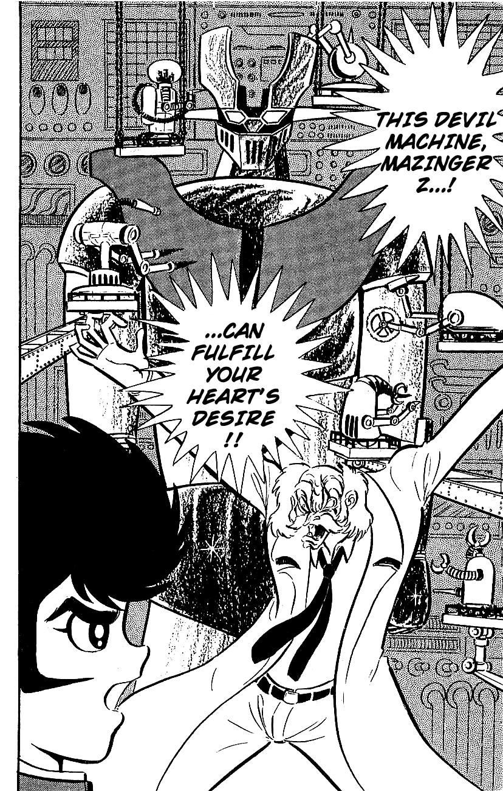
Anche al giorno d'oggi il genere robotico è vivo e ben rappresentato, sicuramente molto importante nel complesso dell'animazione giapponese. Ma negli settanta il robotico aveva uno status di assoluta dominanza, specialmente in Italia dove l'anime giapponese veniva identificato quasi solo con il robotico (altri celebri anime dell'epoca come Heidi e Remì non erano ambientati in Giappone e quindi non venivano riconosciuti immediatamente come giapponesi). L'esplosione del genere deriva direttamente dal successo di Mazinga e dei suoi discendenti diretti, che costituiscono il cardine dell'ortodossia robotica, quasi completamente fissata dalle idee di Go Nagai. Vale la pena di fare un breve escursus storico sull'impressionante attività del sensei negli anni che vanno dal 1972 al 1976.
La serie di Mazinga Z - preceduta dal manga di Nagai pubblicato il 2 ottobre 1972 su Weekly Shōnen Jump - inizia il 3 dicembre 1972 e continua per tutto il 1973 e buona parte del 1974, totalizzando 92 episodi, mutandosi poi nel Grande Mazinga a partire dal settembre 1974 e proseguendo per più di un anno per un totale di 56 ulteriori episodi. Durante il run di Mazinga Z continua ad andare in onda Devilman (dal luglio 1972 all'aprile 1973) ed esce al cinema il film Mazinga Z contro Devilman nel luglio 1973. Nello stesso mese esce il primo numero di Violence Jack e poco dopo partono in parallelo le serie TV di Cutie Honey e Dororon Enma-kun (dall'ottobre 1973 al marzo 1974), con associati i relativi manga; nel 1973 esce il manga di Getter Robot in collaborazione con Ken Ishikawa mente nell'aprile 1974 inizia l'anime corrispondente; in luglio esce il film Mazinga Z contro il Generale Nero, prima apparizione del Grande Mazinga, due mesi prima che inizi la sua serie TV. L'anno dopo (1975) escono Getter Robot G e Jeeg robot d'acciao mentre il Grande Mazinga è ancora in corso e subito dopo, in ottobre, parte la serie TV di Goldrake/Grendizer, in seguito al successo del film cinematografico Uchuu Enban Dai-Sensou uscito nel luglio 1975, che ne costituisce il pilot. In totale, tra il 1973 e il 1976 escono una decina di film sui robot nagaiani. Sono anni in cui Go Nagai e la Toei hanno il monopolio del genere super robot, che sfruttano come una miniera d'oro; il monopolio avrà breve durata, perché già nell'aprile 1975 la Sunrise entra in gioco, affidando a un giovane regista di nome Yoshiyuki Tomino la direzione di Raideen, l'anime che inventerà il colpo finale. Raideen, che in seguito verrà diretto da Tadao Nagahara, il terzo grande autore di serie robotiche, che più avanti si distinguerà per Vultus, Daimos e Daltanious (ha diretto anche buona parte di Lady Oscar, ma non posso dilungarmi in questa sede). Il 1975 e il 1976 sono comunque ancora anni nagaiani, di Raideen sorprende la povertà tecnica, paragonabile a quella del primo Mazinga Z, mentre nello stesso anno la Toei sforna robot spettacolari del calibro di Getter Robot G, Jeeg e soprattutto Grendizer. Il robotico nagaiano entrerà in crisi nel 1976, con un Groizer X e Gakeen che sono spenti cloni dei loro predecessori; inoltre abbandonerà la Toei in seguito alle polemiche in base al mancato riconoscimento del suo contributo all'ideazione di Gaiking (e sembra anche di Ken Falco). Continuerà comunque a produrre manga; di quell'anno si ricordano Kekko Kamen e Shutendoji. Anche senza Nagai gli anni 1976-1979 sono gli anni dell'esplosione del super robot, in cui vengono realizzate una quantità di serie (Godam, Ufo Diapolon, Combattler V, Astrorobot Contatto Ypsilon, Mechander, Danguard, Ginguiser, Vultus V, Balatak, Zambot 3, General Daimos, Daitarn 3, Daikengo, Daltanious, Gordian e Gundam che è il primo robotico a staccarsi veramente dal modello nagaiano) di cui la maggior parte sono brutte copie di Mazinger. Ma l'influenza del canone robotico inventato per la gran parte da Nagai non si è certo esaurita nel 1979: anche dopo Gundam si sono continuati a produrre robotici canonici per buona parte degli anni ottanta, almeno fino a Dancougar; gli anni novanta hanno visto da un lato uno stravolgimento del robotico originale in seguito all'influenza di Evangelion; dall'altro un ritorno al super robot per ragazzi, specialmente grazie all'apporto delle otto Brave Series degli anni 1990-1997. Negli anni duemila il robotico si è differenziato notevolmente da quello delle origini, eppure ancora oggi (2012) si trovano robotici perfettamente aderenti all'ortodossia nagaiana, basati sullo schema del mostro della settimana, con agganciamenti, frasi rituali e combattimenti fondati sulla spettacolarità molto più che sulla verosimiglianza. Cito soltanto i vari Aquarion, in cui oltre all'influenza di Mazinga Z si vede fortissima anche quella del Getter Robot, a livello di mecha design.
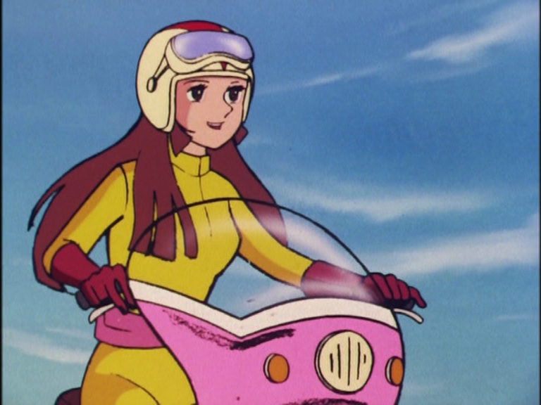
A guardare bene, il successo dell'anime di Mazinger Z nasce soprattutto da fiuto commerciale da parte della Toei. La Toei Animation era una casa con una lunga storia e una tradizione di film di animazione di ottima qualità, che voleva sfondare anche nel campo delle serie TV, prendendo il posto della Mushi Productions che all'epoca navigava in cattive acque (fallirà nel 1973). La Toei per sfondare nel mercato anime decise di sfruttare due carte: puntare sui soggetti di un autore giovane e molto amato dal pubblico, Go Nagai, e puntare sul canovaccio tokusatsu, genere in cui aveva molta esperienza, avendo prodotto varie serie televisive a partire dal primo tokusatsu della storia, Gekko Kamen/Moonlight Mask (1958), il cui anime era ancora in onda ai tempi di Mazinga Z. Tra l'altro, l'anime di Moon Mask Rider si è visto anche in Italia nei circuiti delle TV private nei primi anni ottanta, anche se ormai pochi lo ricordano. Probabilmente è più conosciuta la parodia di Gekko Kamen presente nella seconda serie di Sailor Moon, esempio tipico della tendenza della Toei di omaggiare le sue creazioni del passato. La stessa Sailor Moon contiene innumerevoli omaggi a Cutey Honey e a altre serie nagaiane. Non c'è dubbio che il Dark Kingdom visivamente e cromaticamente debba molto al Regno delle Tenebre visto per la prima volta nel film di Mazinga Z contro il Generale Nero. Dico questo semplicemente per far notare la pervasività di idee nate con Mazinga Z, che hanno cambiato l'immaginario collettivo, tanto da riapparire a distanza di decenni in anime di genere totalmente diverso.
La regia di Mazinger Z venne affidata a Katsumata Tomoharu, un regista destinato a diventare un pilastro dell'animazione giapponese; tra i suoi lavori posteriori a Mazinga Z si ricordano la Corazzata Yamato, Danguard Ace, Capitan Futuro, King Arthur, Blue Noah, L'Arcadia della mia giovinezza, Wingman, Ginga Nagareboshi Gin; recentemente è stato anche regista di Saint Seiya Hades. La regia di singoli episodi, come pure i disegni e le animazioni furono assegnati a diversi gruppi, tanto è vero che la qualità della serie è molto altalenante a seconda delle puntate, com'era tipico dell'epoca. Del resto si trattava di una produzione a basso budget, in cui si sopperiva alle carenze tecniche con l'espressività e con scene drammatiche e melodrammatiche, seguendo la lezione originale di Tezuka.
Tra i vari autori che hanno collaborato a Mazinga Z mi pare il caso di
citare il famoso animatore Kazuo
Nakamura, che ha lavorato
in molte altri produzioni nagaiane, specialmente Jeeg, e che è l'autore
di Golion/Voltron; il veterano Shirane Tokue, che aveva
già lavorato a produzioni anni sessanta come Akko-chan, l'Uomo Tigre,
Rainbow Sentai Robin e Gegege no Kitarou; Yuugo Serikawa, regista di
Cyborg 009 e di SF Saiyuuki Starzinger, oltre che del film di
Frankenstein; Katsuta Toshio, dietro il planning di Getter Robo,
Getter Robo G, Uchuu Enban Dai-Sensou, Grendizer, Danguard,
Starzinger, King Arthur. Agli script della serie hanno lavorato
Keisuke Fujikawa (Sasurai no Taiyo, X Bomber, God Mars, Dancougar,
Transformers, Windaria), Takaku Susumu (Cutey Honey, Devilman, Ge Ge
Ge no Kitaro, Hyakujuu Ou Golion, Fist of the North Star motion
picture). Tutti professionisti della Toei che hanno prestato
mano a decine di anime degli anni settanta. Il chara design fu
affidato a Hane Yoshiyuki (Sally, Blue Noah) e Morishita Keisuke
(L'invincibile Shogun).
Le musiche sono opera di Watanabe Michiaki (detto anche Watanabe Chuumei), che diventerà una colonna portante del genere robotico. A lui si devono le musiche non soltanto di Mazinga Z, ma anche di Getter Robot, del Grande Mazinga, di Jeeg, Gakeen, Mechander, Arbegas e tanti altri, arrivando fino a Godannar negli anni duemila. Sono musiche militaresche, molto semplici, adatte ad un pubblico non sofisticato, nello stesso tempo facili da imparare ed esaltanti, tanto che sono rimaste impresse anche ai bambini italiani, pur non conoscendo minimamente il giapponese. Va detto che nell'edizione internazionale di Mazinger le parole sono state tradotte in inglese, e quindi in Italia abbiamo sentito la canzone del Jet Scrandler in inglese, non in giapponese. La sigla di apertura è stata tradotta in italiano, ma tenendo la base musicale originale. Buona parte del successo dell'anime deriva proprio dalla colonna sonora.
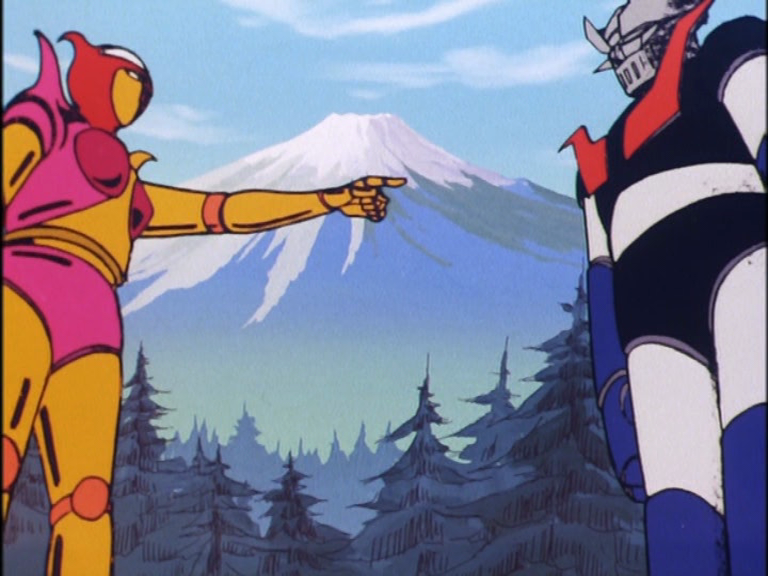
Mazinga Z venne trasmesso in Giappone alle ore 19:00 sulla rete nazionale Fuji Television. L'orario di trasmissione, lungi dall'essere un dettaglio, è un punto cruciale per capire il suo target di riferimento: Mazinga Z non era un semplice "cartone per bambini" ma piuttosto uno spettacolo per famiglie. Veniva visto durante l'ora di cena da tutta la famiglia riunita. Quindi anche se certamente il target principale era costituito dai ragazzini delle elementari, era pensato per piacere anche ai ragazzi più grandi e ai loro genitori: i battibecchi tra Koji e Sayaka sicuramente non interessavano i bambini, ma potevano far divertire le loro madri. D'altra parte le leggere scene ecchi potevano far sorridere i fratelli maggiori e i padri, senza per questo scandalizzare i più piccini. La classificazione per famiglie di Mazinga Z può sembrare assurda agli spettatori occidentali, abituati al concetto disneyano del genere. Al giorno d'oggi anche nello stesso Giappone il concetto di "prodotto per famiglie" si è avvicinato allo standard occidentale, ma per i giapponesi degli anni settanta le cose erano molto diverse: un anime con scene di distruzione di massa, morti, tragedie, sangue, violenza e scene ecchi era considerato perfettamente accettabile. Da noi naturalmente non era così e sorprende davvero che sia stato trasmesso in quell'orario. Invece, incredibilmente, così è stato: in Italia i bambini degli anni settanta hanno avuto la fortuna di avere la stessa esperienza dei bambini giapponesi, anche se non con Mazinga Z, ma con Goldrake, che veniva trasmesso su Rai Due alle ore 19:15. Oggigiorno un tale orario di trasmissione sarebbe impensabile; va anche tenuto conto che nel 1978 esistevano due sole reti nazionali e che quindi qualunque programma trasmesso a quell'ora aveva un'audience di decine di milioni di telespettatori. È per questo che l'impatto di Goldrake è stato così forte in Italia. Chi scrive vedeva Goldrake con la famiglia durante la cena esattamente come succedeva in Giappone. Posso quindi confermare di prima mano che Goldrake piaceva anche agli adulti (sia detto incidentalmente, mia madre in particolare era una fan di Venusia). La trasmissione sulla RAI in uno degli orari di massimo ascolto è all'origine sia dell'enorme popolarità di Goldrake che delle enormi polemiche che hanno accompagnato la sua messa in onda. Su questo punto ci sarebbe da fare tutto un lungo discorso, che però non è il caso di approfondire in questa sede, anche perché è già stato fatto altrove; rimando le persone interessante al libro "Mazinga Nostalgia" di Marco Pellitteri che tratta l'argomento diffusamente. Qui più che dell'accoglienza italiana di Goldrake, ci interessa parlare di quella di Mazinga Z, tuttavia il fato delle tre principali serie robotiche nagaiane è inestricabilmente legato, perché sono apparse sulle nostre televisioni in ordine cronologico inverso.
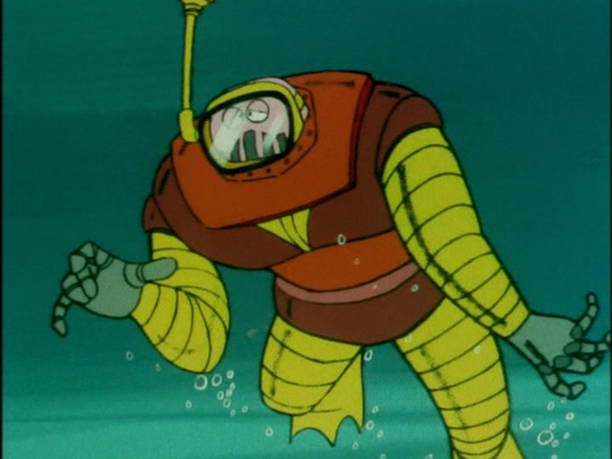
In Italia è impossibile parlare di Mazinga Z senza tener conto del fatto che è stato preceduto da Goldrake, che è stato il primo anime robotico mai arrivato in Italia, il 4 aprile 1978, e dal Grande Mazinga, che è arrivato invece nella primavera 1979, in onda sulle neonate TV private, in tempi in cui la Fininvest non esisteva a Canale 5 era una televisione privata come tutte le altre. Mentre le serie andate in onda sulle private hanno miracolosamente scampato la scure del recensore (più per mancanza di fondi che per un preciso disegno), le serie trasmesse dalla Rai TV sono state stravolte dall'adattamento. Per questo motivo era assai difficile per i bambini dell'epoca orientarsi: com'era possibile che lo stesso personaggio fosse chiamato Alcor in Goldrake, Koji nel Grande Mazinga e Ryo in Mazinga Z? È chiaro che l'esperienza italiana è stata del tutto diversa da quella giapponese. In originale il Grande Mazinga si è visto nell'ultima puntata di Mazinga Z e la sua serie è andata in onda la settimana immediatamente successiva: per il pubblico giapponese non c'è stata nessuna soluzione di continuità, Mazinga Z è semplicemente continuato con un nuovo aspetto, un nuovo nome e con un nuovo pilota. Nemici come il Duca Gorgon hanno continuato ad essere presenti. Amici come Boss, Nuke e Mucha, le spalle comiche di Mazinga Z, hanno continuato a far parte della serie del Grande Mazinga e così Shiro, il fratello di Koji. C'è insomma totale continuità tra le due serie. C'è un salto maggiore con Goldrake (Grendizer in originale) in cui Koji, pur essendo presente in tutte le puntate è declassato a ruolo di aiuto dell'eroe e non ha neppure il diritto di pilotare un robot. Il motivo è che secondo l'idea originale di Nagai, Grendizer doveva essere del tutto indipendente da Mazinger e Koji Kabuto non doveva apparire. Il personaggio gli fu imposto dalla produzione e per questo venne relegato a un ruolo secondario. Fu una scelta che gli spettatori giapponesi non hanno digerito, tant'è vero che Grendizer è poco amato in Giappone e non ha mai avuto un remake. Tutto il contrario della situazione italiana dove Goldrake fu il primo robotico e quindi è il più conosciuto e amato della trilogia.
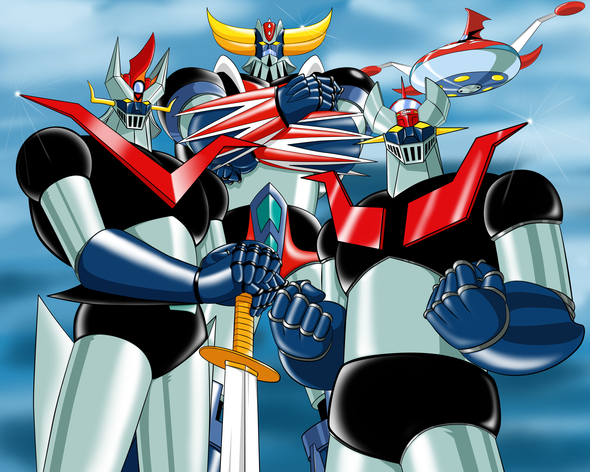
Ad essere precisi, Mazinga Z in Italia venne trasmesso per la prima volta il 7 gennaio 1980, sulla Rete Uno, alle ore 17:30, un giorno dopo la fine di Goldrake, avvenuta il 6 gennaio 1980 (fonte http://imageshack.us/f/6/previsionitv.jpg/). Le puntate vennero ridotte di dimensione (da 22 minuti a circa 19), con il nome del protagonista cambiato da Koji a Ryo. La trasmissione di Mazinga Z, a causa del fallimento della società francese che deteneva i diritti di sfruttamento della serie, è incompleta, mancando gli episodi n° 4, 5, 14, 28, 38 e tutti gli episodi dal n° 57 al n° 92. Ma non sono stati questi i motivo dello scarso successo di Mazinga Z in Italia: il motivo è che nel gennaio 1980 i bambini italiani avevano già visto serie di eccellente livello tecnico come Goldrake, il Grande Mazinga, Jeeg e Danguard, tutti super robot posteriori a Mazinga Z ma arrivati da noi prima: ritornare alla tecnica del 1972 nel 1980 era un passo indietro. Anche perché Mazinga Z andava in onda in parallelo con una serie del calibro di Gundam, iniziata il 9 febbraio, solo un mese dopo. Posso dire con cognizione di causa, perché all'epoca c'ero, che tutti i bambini parlavano di Gundam, non certo di Mazinga Z, che sapeva di minestra riscaldata. Mazinga Z non presentava nessuna innovazione rispetto a Goldrake o al Grande Mazinga, come è ovvio che sia: come conseguenza, Mazinga Z venne snobbato come brutta copia del Grande Mazinga. È per questo che da noi il Grande Mazinga (Great Mazinger in originale) è molto più famoso, al punto che quando si dice Mazinga tout court si intende normalmente il Grande Mazinga. Anche il chara design di Mazinga Z lasciava insoddisfatto chi era abituato alle prodezze di Kazuo Komatsubara e Shingo Araki in Goldrake; il barone Ashura veniva visto come una brutta copia di Gandal di Goldrake (mentre in realtà è Gandal ad aver copiato), il conte Blocken appariva ridicolo come parodia di un gerarca nazista. Il design del robot appariva primitivo rispetto a quello del Grande Mazinga, le animazioni, le musiche e i colori erano terribili rispetto a quelle di Goldrake. Anche le trame erano più semplici, più infantili, meno drammatiche e violente di quelle del Grande Mazinga e con nessuno spazio significativo per gli aspetti sentimentali, a differenza di Goldrake. Io stesso non ho provato nessuna tristezza alla sospensione di Mazinga Z sulla Rai, perché le TV private erano piene di super robot più colorati e più moderni di Mazinga Z. Quindi la storia in Italia è stata severa con il primo Mazinger; eppure, rivedendolo oggi a mente fredda, ci rende conto di quanto il giudizio di allora sia stato ingeneroso. Non soltanto perché Mazinga Z ha l'indubbio merito dell'originalità, ma anche perché la serie stessa vale di più di quanto lasciassero supporre le puntate trasmesse in Italia. Nei suoi 92 episodi di durata Mazinga Z cambia, si evolve, acquista nuove armi, nuovi poteri, nuovi nemici: e in particolare le puntate mai trasmesse in Italia presentano evoluzioni della trama di indubbio interesse. È in queste puntate che muore il Barone Ashura, che appare per la prima volta il Duca Gorgon che tutti i fan del Grande Mazinga ricorda; è Mazinga Z che inventa il primo super robot combattente di sembianze femminili, anzi ne inventa due: Afrodite A e Diane A, la sua evoluzione, che appare a partire dall'episodio 76, che fa parte degli episodio non trasmessi. Per non parlare di Minerva X, forse il migliore dei robot femminile di Nagai, che però non si è mai visto in Italia.
Da una prospettiva italiana può sembrare che il canone robotico sia stato inventato dal nulla da Go Nagai e che Mazinga Z contenga già tutto quello che definisce un anime robotico. In realtà, va riconosciuto che Mazinga Z prende varie idee dal tokusatsu televisivo; inoltre, va ammesso che il canone robotico si è evoluto successivamente e include topoi che non sono presenti in Mazinga Z: in particolare il colpo finale, inventato da Raideen e successivamente copiato da tutti i robotici a partire da Grendizer. Anche l'esplosione risolutiva è un topos posteriore a Mazinga Z. Infatti in Mazinga Z i mostri meccanici solitamente non esplodono, vengono fusi dal raggio termico, corrosi dal raggio ciclonico o fatti a pezzi dai pugni atomici; quando esplodono si tratta di esplosioni da poco, senza il caratteristico fungo atomico tipico dei robotici posteriori. In Mazinga Z ci sono gli agganciamenti ma mancano le trasformazioni che entreranno nel canone robotico solo nel 1974 con Getter Robot. Va notato che un'altra delle caratteristiche fondamentali del canone, l'urlare il nome dell'arma utilizzata, non è presente nelle prime puntate di Mazinga Z. Il motivo è che Koji inizialmente non sa pilotare il robot e impiega circa una decina di puntate per familizzarsi con esso e con le sue armi: una inaspettata vena di realismo in un anime che è tutto fuorché realistico. Ma queste precisazioni non sminuiscono in nessun modo la carica rivoluzionaria di Mazinga Z, che giustamente viene riconosciuto come il vero capostipite del genere robotico, nonostante non sia stato il primo robot gigante apparso sui teleschermi giapponesi.
Già il vecchio Astroboy si era trovato più volte a combattere avversari robotici di grandi dimensioni, e nello stesso anno di Astroboy (1963) appariva sugli schermi un anime il cui protagonista, Tetsujin 28, è un robot gigante, tratto da un manga di Misuteru Yokoyama del 1958. Altri esempi di robot giganti sono Giant Robot, dello stesso Yokoyama, e Astroganga, che appare in TV due mesi prima di Mazinga Z. Eppure tutti questi robot non sono super robot nel senso moderno del termine, senso che è stato inventato da Go Nagai. I robot giganti che precedono Mazinga Z sono entità indipendenti, comandati a distanza tramite un telecomando o un controllo vocale, oppure sono robot autocoscienti, come quelli di Tezuka o come Astroganga. È solo con Nagai che il robot gigante diventa una macchina che si guida come una motocicletta: è Nagai che inventa il concetto dell'agganciamento, in cui il robot funge come armatura gigante ed estensione del suo pilota. È nel robotico nagaiano che i colpi inferti al robot si ripercuotono sul protagonista. È dal robotico nagaiano che nasce l'idea delle scene rituali in cui il pilder si aggancia al robot, le espressioni ripetute a mo' di formula magica (Pilder On! Mazin-Go!) che sono diventate parte del canone di tutto il genere. Ugualmente magiche sono le super armi di Mazinga, un'altra innovazione assente nei robot giganti precedenti, una geniale commistione tra la modernità e la tradizione delle arti marziali di dare un nome a ogni tecnica di combattimento.
Un altro caposaldo del canone robotico inventato da Mazinga Z è l'uso di una colonna sonora specifica e ripetuta per sottolineare i momenti topici dell'anime: gli agganciamenti (in questo senso è esemplare il tema musicale del Jet Scrandler, che marca immancabilmente gli agganciamenti dello Scrandler per circa sessanta puntate) e le battaglie (in particolare durante le battaglie di Mazinga Z si sente in sottofondo la opening, idea ripresa da dozzine di robotici e che si è continuata a utilizzare fino agli anni duemila, mi viene in mente per esempio Aquarion). Del resto l'idea di un tema sonoro associato alle scene clou si può far risalire almeno al 1954, al celeberrimo tema di Godzilla di Akira Ifukube: è chiaro che tutti i robotici nagaiani e per estensione tutti i robotici attingono a piene mani dai film di kaiju, in primis quelli di Godzilla: pensate solo alle scene di distruzione di città. C'è di più, gli anime robotici di quegli anni derivano dai film di Godzilla gli effetti sonori e in particolare le urla dei mostri; nel caso di Mazinga Z il legame è addirittura a livello di colonna sonora, perché lo stesso Akira Ifukube ne scrisse una. Del resto Ifukube non era nuovo a collaborazioni con gli anime, avendo scritto le musiche del film Toei del 1963 Orochi, il drago a otto teste.
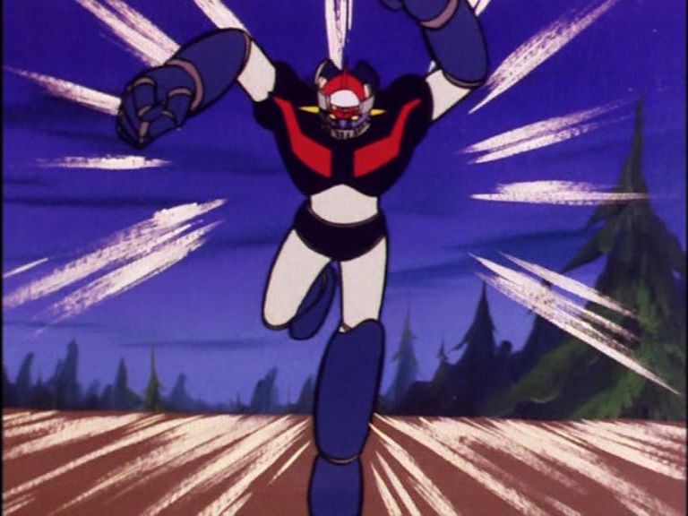
Un altra caratteristica tipica del super robot classico, era l'importanza data all'addestramento, che è una componente essenziale di tutti i robotici nagaiani. In Mazinga Z Koji impiega una decina di puntate per imparare a pilotare il robot, mentre nel Grande Mazinga Tetsuya Tsurugi dedica tutta la vita, fin dall'infanzia, ad allenamenti durissimi, tanto che pilotare il Grande Mazinga diventa la sua ragione di vita. Gli addestramenti durissimi sono tipici di buona parte del robotico anni settanta (vengono in mente le prime puntate di Danguard, in cui Arin si sottopone a pesantissime prove per riuscire a completare l'agganciamento con il satellizzatore) e derivano direttamente dagli allenamenti dello spokon di quegli anni. Questo aspetto verrà spesso e volentieri dimenticato in robotici successivi, in cui capita di vedere ragazzini pilotare un robot gigante fin dalla prima puntata e senza alcun addestramento.
Per la sua importanza nel canone robotico, il concetto di agganciamento merita una trattazione a parte. Non c'è dubbio che Go Nagai debba essere accreditato come inventore del concetto, che appare fin dalla prima puntata di Mazinga Z, quando Koji riesce a fatica a fare agganciare il Pilder con il robot. Da allora l'agganciamento è sempre stato al cuore del genere robotico ed è stato sfruttato fino all'inverosimile; paradossalmente, l'anime che ha sfruttato al meglio tutte le potenzialità dell'idea non è un classico degli anni settanta, ma un anime moderno come Gurren Lagann, tutto fondato sull'idea geniale che se un piccolo mecha può agganciarsi ad uno più grande, allora anche il mecha più grande può agganciarsi ad uno ancora più grande, e così via ricorsivamente all'infinito.
In Mazinga Z l'idea dell'agganciamento, che ebbe tanto successo con il Pilder (in Italia tradotto stranamente come aliante slittante), fu riciclata quando si decise di dare le ali a Mazinga. Contrariamente a quanto si potrebbe supporre, quella di far volare Mazinga non fu un'idea di Nagai, ma un richiesta del pubblico. Nagai era contrario all'idea ("Mazinger è un robot grande, pesante, massiccio, non può e non deve volare") ma le richieste insistenti da parte dei piccoli spettatori portarono la produzione alla decisione di far volare Mazinger. Del resto non era un richiesta irragionevole: Astroboy volava, Tetsujin 28 volava, Giant Robot volava, Astroganga volava, i mostri meccanici del Dottor Hell volavano, insomma Mazinger era l'unico robot appiedato in circolazione. Nagai quindi si piegò alla richiesta e la produzione decise di ideare un dispositivo, il Jet Scrandler, in grado di far volare Mazinger. L'idea brillante fu quella di rendere lo Scrandler un mezzo separato, in grado di agganciarsi a Mazinger, così come il Pilder: si era capito che l'idea dell'agganciamento piaceva e andava sfruttata. Il Jet Scrandler piacque così tanto che nella serie del Grande Mazinga, che pure aveva ali incorporate e non ne aveva bisogno, si decise comunque di introdurre un mezzo simile al Jet Scrandler, il Great Buster (da noi super razzo). Si trattò probabilmente un trucco per far rialzare gli indici di ascolto. Anche Goldrake si agganciava al suo disco, ma non era abbastanza, e si idearono così tre mezzi simili allo Scrandler (Goldrake 2, il Delfino Spaziale e la Trivella Spaziale) per dare luogo a ulteriore agganciamenti.
L'idea migliore però, fu quella di associare allo Scrandler una colonna sonora dedicata, che viene fatta sentire a tutto volume ad ogni agganciamento dello Scrandler, per decine e decine di puntate, associando indissolubilmente nelle mente dei bambini l'immagini dell'agganciamento alla canzone. Posso facilmente immaginare eserciti di bambini giapponesi cantare in coro la canzone dello Scrandler, quando ancora il concetto di karaoke non era famoso (sembra che il termine sia stato inventato nel 1971, mentre i locali per il karaoke hanno cominciato a diffondersi in Giappone verso la fine degli anni settanta).
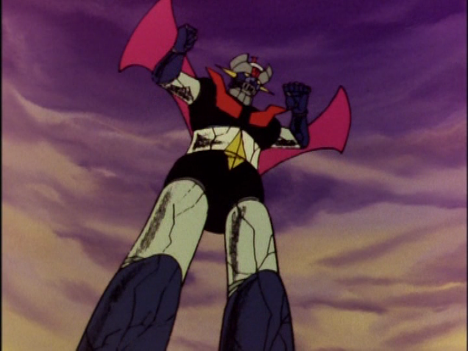
Mazinga Z è rivoluzionario non solo per l'idea dell'agganciamento, per la colonna sonora, per le armi e per i combattimenti robotici: è rivoluzionario anche per i personaggi. Prima di Mazinga Z il protagonista di un manga/anime con robot giganti era tipicamente un ragazzino perfettino e vagamente antipatico, Shotaro di Tetsujin 28 essendone l'esempio più famoso; con Nagai per la prima volta il protagonista diventa un adolescente (Koji Kabuto) o addirittura un adulto (Tetsuya Tsurugi). E non si tratta di eroi perfetti e moralmente ineccepibili, affatto: Koji è un adolescente testa calda e attaccabrighe, sempre pronto ad azzuffarsi con Boss, mentre Tetsuya ha seri disturbi mentali, è ossessionato dal combattimento visto che tutta la sua vita è stata segnata dai durissimi allenamenti volti a prepararlo a combattere le forze di Mikenes. Insomma, tutto il contrario dei protagonisti tutti buoni sentimenti che si erano visti fino ad allora. Del resto Nagai è un autore violento, aggressivo, a volte addirittura feroce, i cui precedenti sono nel genere erotico (inizia nel 1968 con il manga ecchi Scuola senza Pudore) e nel genere horror (Mao Dante 1971, Devilman 1972). Questi lati di Nagai si vedono anche in Mazinga, nonostante si tratti di un anime inteso per un pubblico infantile. Il sottotesto sessuale in Mazinga Z è evidente come in tutte le opere nagaiane. Questi aspetti sono più visibili nella seconda parte della serie, ma sono presenti in nuce fin dall'inizio. Lo stesso personaggio del Barone Ashura, che appare fin dalla prima puntata è sessualmente ambiguo in una maniera che non si era mai vista prima in un anime (nel manga lo si vede addirittura nudo sotto la doccia, per mostrare ai lettori che la sua bisessualità non è un trucco).
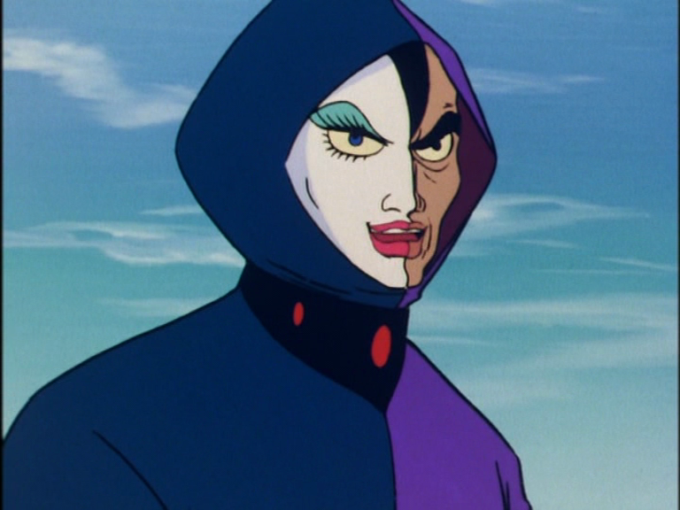
Ma non sono gli accenni alle sessualità il problema. Mazinga Z è un anime estremamente violento, figlio di anni in cui era ancora possibile mostrare il sangue e la morte a ragazzini delle elementari. Dopo di lui Getter Robot sarà ancora più drammatico (è il primo anime in cui uno dei piloti muore) mentre il Grande Mazinga vince la palma di robotico più splatter della storia, almeno per il suo target di destinazione. Goldrake è meno violento, ma sempre estremamente drammatico rispetto agli standard moderni. È per questo motivo che Mazinger Z venne sospeso sugli schermi italiani all'incirca a metà serie. Da allora (nel 1980) la Rai mise un embargo sulle produzioni robotiche, per venire incontro alle istanze sollevati dai comitati dei genitori preoccupati per la violenza eccessiva presente in questi anime. Fortunatamente il genere non ne soffrì molto, semplicemente si trasferì sulle TV private che in quegli anni non avevano problemi a trasmettere qualunque cosa ci arrivasse dal Giappone senza alcuna censura. Per questo motivo abbiamo avuto la fortuna di vedere almeno il Grande Mazinga con i nomi originali, in cui per la prima volta Koji Kabuto si chiamava con il suo nome e non Alcor o Ryo.
Il super-robot nagaiano non ha veri antecedenti nel campo degli anime, ma non si può dire che sia del tutto originale, perché ha dei pesantissimi debiti nei confronto del kaiju eiga cinematografico e del tokusatsu televisivo. Mi pare quindi il caso di inserire un paragrafo su questi generi, per fare capire il contesto storico da cui nasce Mazinga.
Partiamo dal decennio precedente Mazinga Z: è indubbio che gli anni sessanta siano stati gli anni d'oro per i film di kaiju (mostri giganti giapponesi) che da film drammatici per adulti si trasformarono in film fantastici per bambini. L'evoluzione è evidente fin da Il trionfo di King Kong del 1962, il primo film di Godzilla con elementi umoristici. Già nel 1967, l'anno de Il figlio di Godzilla, Godzilla si è trasformato completamente in un beniamino dei bambini. Il legame tra Gamera e i bambini invece è diretto fin dal primo film del 1965. Sono questi gli anni del trionfo del genere tokusatsu in televisione (il primo tokusatsu, Ultraman, è del 1966). Rispetto ai film di kaiju, in cui l'eroe non è un uomo ma un mostro sacro come Godzilla o Gamera (uso la parola "sacro" non a caso, perché Godzilla viene adorato come un Dio/Demonio dai pescatori fin dal suo primo film, mentre Gamera, mostro guardiano dell'universo è una creatura in parte magica creata dall'antico impero di Atlantide) il tokusatsu ebbe l'idea di riportare l'attenzione dal mostro gigante alla figura umana: nel telefilm tokusatsu tipico l'eroe è un uomo in grado di trasformarsi in un gigante dotato di super armi. Tale gigante non è un robot come Mazinga Z, ma piuttosto un cyborg, un misto tra uomo e macchina, mentre il mostro della settimana continua a essere un dinosauro o un qualche altro mostro organico. Il successo del tokusatsu fu tale che anche i kaiju eiga ne vennero influenzati; potrei per esempio citare il caso di Jet Jaguar, un tipico eroe tokusatsu che appare nel film Godzilla ai confini della realtà del 1973.
Nagai e la Toei semplicemente prendono atto che il genere tokusatsu spopolava e decidono di portare il canovaccio tokusatsu in animazione. Semmai quello che sorprende è che che questa semplice idea non sia venuta in mente prima. Leggendo la biografia di Tezuka si scopre che uno dei motivi del fallimento della Mushi Productions è stato anche l'arrivo dei tokusatsu, che rubavano spettatori a Kimba e le altre produzioni dell'epoca. I bambini amavano i mostri giganti, le scene spettacolari di distruzione della città, le storie semplici e ripetitive. Tuttavia la Mushi non recepì mai il messaggio e tentò di contrastare gli spettacolari tokusatsu puntando su buone storie (vengono in mente Rocky Joe e Sasurai No Taiyou) che però non erano apprezzate dal pubblico più giovane. La Toei invece seppe dare ai più piccoli ciò che volevano: mostri giganti e combattimenti. Devilman fu un grande successo e Mazinga Z addirittura un trionfo, continuando per centinaia di puntate se si contano i suoi seguiti diretti e indiretti.
Il successo dell'anime fu tale che riuscì a influenzare pesantemente lo stesso genere da cui era nato. In particolare, mentre il tokusatsu che precede Mazinga Z prevedeva eroi in grado di trasformarsi in giganti d'acciaio (Ultraman, Spectreman), il tokusatsu posteriore a Mazinga Z cominciò a introdurre robot giganti pilotati dall'eroe. Per esempio sto pensando a quel capolavoro del trash che è lo Spiderman del 1979 e ai tokusatsu sentai all'origine dei Power Rangers. L'influenza del robotico fu così forte che perfino il nonno di tutti i robot, il grande Godzilla da cui tutto è iniziato, si trovò negli anni settanta ad affrontare avversari quali Mechagodzilla (che compare per la prima volta nel film Godzilla contro i robot del 1974), un robot gigante pilotato da alieni scimmieschi che vogliono conquistare la Terra. È stato forse il primo caso nella storia in cui l'anime è riuscito a vincere sul cinema, diventando esso stesso fonte di ispirazione per il grande schermo e non viceversa.
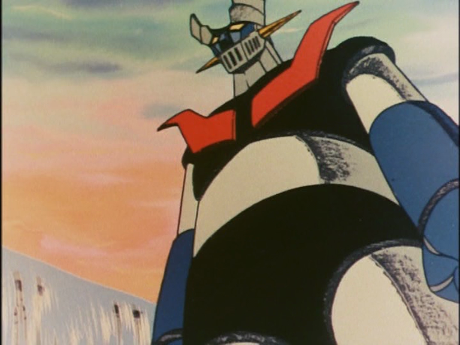
Con questo chiudo questo lungo dossier, che però tocca solo la punta dell'iceberg. Molto di più ci sarebbe da dire sulla saga del Grande Mazinga; anche per quanto riguarda Mazinga Z non ho neppure iniziato un'analisi dei personaggi, delle tematiche, delle puntate più significative. Moltissimo si potrebbe dire sull'uso della simbologia cristiana in Go Nagai, presente in tutte le sue opere e anche in Mazinga Z (croci, vetrate di chiese cattoliche, cimiteri cristiani e scene di crocifissione sono molteplici). Oltre vent'anni dopo Hideaki Anno avrebbe sfruttato quest'idea all'estremo, sposandola con la cabala ebraica. Si potrebbe scrivere un intero dossier anche solo sulla gadgettistica ispirata a Mazinga Z: giocattoli, modellini, diari scolastici, cartelle e mille altri oggetti, che oggi fanno la gioia dei collezionisti e hanno tutto un mercato dedicato. Ci sarebbe anche da discutere il lato manga della saga, che ho completamente trascurato. Ho anche ignorato gli aspetti ecchi di Mazinga Z, eppure anche in questo campo si tratta di un anime all'avanguardia.
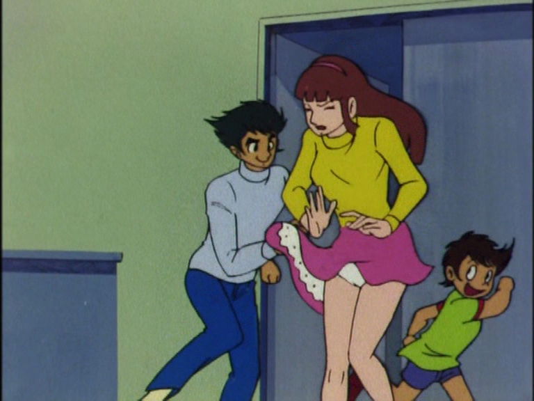
Per questo il dossier ambisce soltanto ad essere un punto di partenza da cui partire per saperne di più. Al lettore interessato ad approfondire l'argomento consiglio in primo luogo di vedere la serie TV, che si può trovare in 15 DVD contenenti tutte le puntate doppiate in Italiano più tutte le puntate mancante sottotitolate (ma devo avvisare che i sottotitoli sono di qualità pessima). Ci sono poi da leggere i manga di Go Nagai e di Ota, che coprono anche le saghe del Grande Mazinga e di Goldrake. I film degli anni settanta andrebbero visti, specialmente "Mazinga Z contro il Generale Nero" che è imprescindibile. Dopodiché c'è una lista interminabile di remake recenti, sia anime che manga. L'opera più estesa è lo "Shin Mazinger" di Yasuhiro Imagawa, in 26 puntate e che ha avuto un discreto successo. Si tratta però di un'opera che a mio avviso tradisce lo spirito dell'originale televisivo pur essendo estremamente fedele alla lettera ai manga di Go Nagai, per cui la raccomando con molte riserve. È un lavoro in cui la mano di Imagawa copre quella di Nagai.
Per chi volesse saperne di più su Go Nagai il sito di Go nagai.net è il posto giusto dove cercare: in particolare gli speciali Tutto sul Grande Mazinga e Tutto su Goldrake sono delle miniere d'informazioni. Il migliore lavoro su Mazinga Z che ho trovato si trova sul sito TanaDelleTigri a opera di Koji. Il sito Lo SpazioBianco questa primavera ha presentato un interessante ciclo di articoli su Mazinga Z, in onore al quarantennale. Il sito di Animemania contiene delle risorse di utilità inestimabile: in particolare la sintesi di tutte le puntate di Mazinga Z e di tutte le puntate del Grande Mazinga. Per chi volesse saperne di più sull'impatto dell'animazione robotica in Italia sul finire degli anni settanta c'è sempre il volume Mazinga Nostalgia di Marco Pellitteri, che omaggia Mazinga anche nel titolo. Da consigliare anche Le anime disegnate di Luca Raffaelli. La rivista Man-ga! nel suo secondo numero ha dedicato un articolo a Mazinga Z in occasione del quarantesimo anniversario.
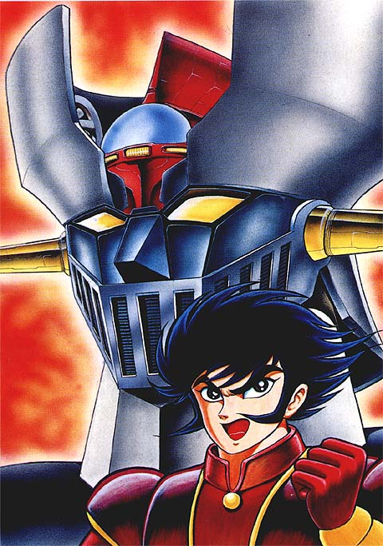